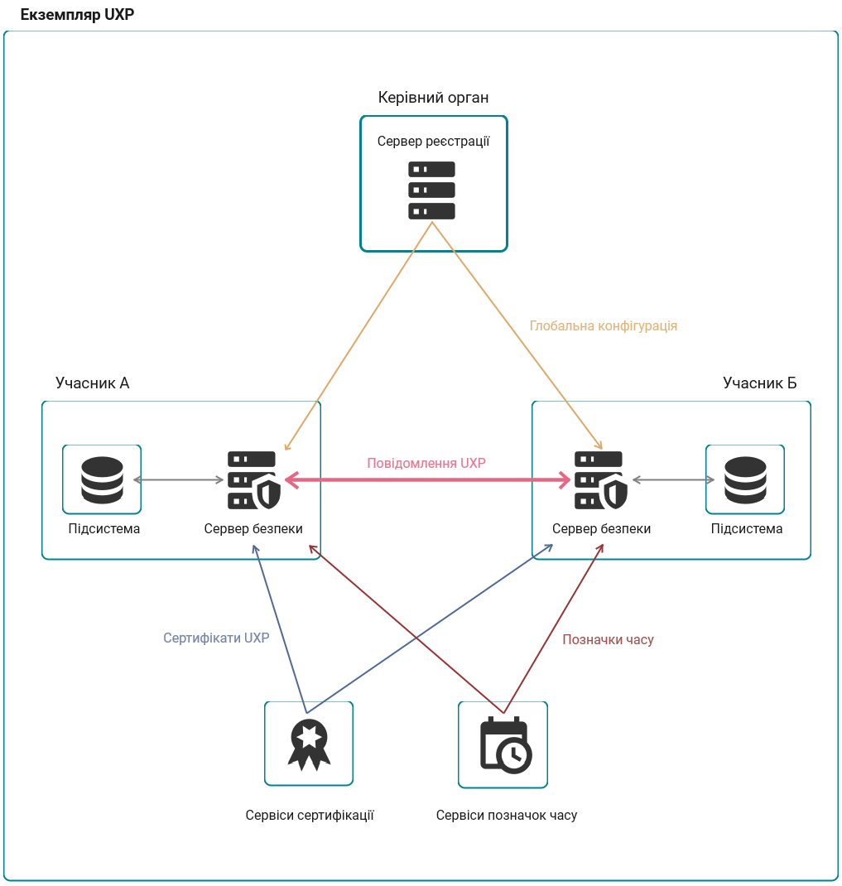

1. Вступ
Даний посібник призначено для Менеджерів ключів, які є відповідальними за ключі підписів для учасників UXP member на сервері безпеки Трембіти.
Цей посібник не описує роботу з сервером безпеки UXP, припускаючи, що ця робота доручена комусь іншому (оператору UXP). Тому зверніться до вашого оператора UXP за допомогою щодо:
-
керування користувачами;
-
криптографічних пристроїв;
-
моніторингу сервера;
-
системних журналів.
1.1. Сервер безпеки UXP
Головним призначенням сервера безпеки є посередництво у керуванні запитами з метою збереження їх доказової цінності.
Сервер безпеки під’єднано до відкритої мережі Інтернет з одного боку та до інформаційної системи у внутрішній мережі організації з іншого боку. В певному сенсі, сервер безпеки можна розглядати як спеціалізований програмний мережевий екран, який може здійснювати посередництво для SOAP та REST вебсервісів; отже його слід налаштовувати паралельно з мережевим екраном організації, який контролює інші протоколи.
Сервер безпеки оснащено функціональністю для забезпечення захисту обміну повідомленнями між клієнтом та постачальником сервісних послуг.
-
Повідомлення, що передаються через відкриту Інтернет мережу захищаються з допомогою цифрових підписів та шифрування.
-
Сервер безпеки постачальника сервісу контролює доступ до вхідних повідомлень, забезпечуючи доступ до даних лише тим користувачам, які підписали відповідну угоду з постачальником сервісу.
1.2. Концепція UXP
-
Екземпляр UXP окрема копія налаштованої інфраструктури системи UXP.
-
Керівний орган UXP організація, відповідальна за підтримку екземпляра UXP.
-
Учасник UXP фізична або юридична особа, що приєдналася до системи UXP для надання та/або отримання сервісів.
-
Підсистема представляє частину інформаційної системи учасника UXP. Для можливості використовувати чи надавати сервіси UXP, учасники UXP повинні вказувати частини своїх інформаційних систем як підсистеми.
Підсистеми є автономними у частині надання та використання сервісів UXP.-
Права доступу для підсистем учасників UXP незалежні — права, надані одній підсистемі, не впливають на права доступу для інших підсистем учасника.
-
Сервіси, що надаються підсистемою є незалежними від сервісів, що надаються іншими підсистемами учасника.
Учасник UXP може пов’язувати кілька різних підсистем з одним сервером безпеки, а також одна підсистема може бути пов’язана з кількома серверами безпеки.
-
-
Ідентифікатор учасника - унікальний ідентифікатор учасника системи UXP. Такий ідентифікатор складається з трьох частин: ідентифікатора екземпляра, класу учасника і коду учасника. Приклад ідентифікатора учасника:
EE/GOV/12345678. -
Ідентифікатор екземпляра - унікальний код, визначений для екземпляра UXP. Наприклад, кодом для естонського екземпляра розробки буде
EE-DEV, а кодом для промислового екземпляра будеEE. -
Клас учасника - групування учасників UXP із подібними властивостями у спільну сутність. Наприклад, державні органи групуються як клас учасників
GOV, а приватні організації групуються як клас учасниківCOM. -
Код учасника - пов’язується з певним учасником UXP і є унікальним в межах класу учасників. Код учасника залишається незмінним протягом усього періоду діяльності учасника UXP. Наприклад, кодом учасників для організацій і державних установ в Естонії є код державної реєстрації підприємств.
-
Код підсистеми - додається до ідентифікатора учасника для розрізнення окремих підсистем учасника.
-
Сервер реєстрації - компонент системи UXP, яким керує керівний орган, що виступає реєстром інформації, необхідної для роботи екземпляра UXP. Сервер реєстрації UXP поширює цю інформацію на сервери безпеки у формі глобальної конфігурації.
-
Сервер безпеки - компонент системи UXP, який з’єднує підсистему учасника UXP із інфраструктурою UXP.
-
Власник Сервера безпеки - учасник системи UXP, юридично відповідальний за певний сервер безпеки.
-
Клієнт Сервера безпеки - підсистема, зареєстрована на сервері безпеки. Реєстрацію має бути погоджено Керівним органом і підтверджено на сервері реєстрації.
-
Глобальна конфігурація - файл, що містить інформацію, необхідну для роботи сервера безпеки. Сервери безпеки періодично завантажують глобальну конфігурацію з сервера реєстрації. Приклади інформації у глобальній конфігурації:
-
учасники UXP та їх підсистеми;
-
зареєстровані сервери безпеки;
-
зареєстровані клієнти серверів безпеки;
-
зареєстровані сертифікати автентифікації;
-
глобальні групи;
-
налаштування системи UXP;
-
адреси та відкриті ключі OCSP сервісів (якщо раніше не надані через сертифікати доповнення 'Authority Information Access');
-
адреси та відкриті ключі підтверджених постачальників сертифікаційних послуг;
-
відкриті ключі проміжних центрів сертифікації;
-
адреси та відкриті ключі підтверджених постачальників послуг фіксації позначок часу.
-
-
Глобальна група - група прав доступу, що керується на рівні сервера реєстрації. Усі підсистеми у глобальній групі мають права доступу, визначені для цієї групи.
-
Локальна група - група прав доступу, що керується на рівні клієнта сервера безпеки.
-
Уповноважений з надання позначок часу (TSA) - постачальник сервісу, який надає фіксовані позначки часу.
-
Сервіси позначок часу - сервіси, що надаються TSA для забезпечення збереження доказових атрибутів повідомлень, якими обмінюються у системі UXP.
-
Позначка часу - дата та час з підписом, надані TSA для доказу, що повідомлення існувало у певний час.
-
Центр сертифікації (CA) - постачальник сервісу сертифікації, який надає цифрові сертифікати.
-
Сервіси сертифікації - сервіси, що надаються CA учасникам системи UXP, для забезпечення їх цифровими сертифікатами, необхідними для підтвердження права власності на відкритий ключ.
-
OCSP - Online Certificate Status Protocol (протокол отримання статусу цифрового сертифіката). OCSP-сервери - це сервери під керівництвом центрів сертифікації, через які опрацьовуються запити на перевірку чинності сертифікатів.
-
Ключі UXP - криптографічні ключі, що використовуються у системі UXP. Зокрема, у системі UXP використовуються пари з відкритого і приватного ключів.
Ключ UXP може бути:-
ключем підпису, що використовується серверами безпеки для цифрового підписання повідомлень, або
-
ключем автентифікації, що використовується серверами безпеки для встановлення захищених каналів зв’язку.
-
-
Сертифікати UXP - сертифікати, які видаються постачальниками сервісів сертифікації, затвердженими Керівним органом UXP.
-
Криптографічний пристрій - зовнішній механізм захисту криптографічних ключів для сервера безпеки, які сервер безпеки використовує для підписання повідомлень. Прикладами криптографічних пристроїв є апаратні модулі захисту (HSM) та USB токени.
-
Токен - сховище для захисту криптографічних ключів, які використовує сервер безпеки. Сервер безпеки має два типи токенів:
-
програмний токен — токен, що використовує вбудоване програмне забезпечення сервера безпеки,
-
апаратний токен — токен на криптографічному пристрої.
-
-
Сервіси UXP - сервіси, що надаються через інфраструктуру системи UXP.
-
Повідомлення UXP - однонаправлений обмін даними між клієнтом та постачальником сервісу в середовищі екземпляра системи UXP. Залежно від джерела походження, повідомленнями можуть бути запити або відповіді на них. Повідомлення UXP мають формуватися відповідно до Протоколу повідомлень UXP ([UXP-PR-MESS]), а створюються вони інформаційними системами учасників UXP.
-
Клієнт сервісу - підсистема учасника UXP, яка надсилає повідомлення із запитами.
-
Постачальник сервісу - підсистема учасника UXP, яка надсилає клієнту сервісу повідомлення з відповіддю на його повідомлення із запитом.
-
Контейнер підпису - файл, який містить підписане повідомлення UXP, цифровий підпис, позначку часу та відповідні сертифікати.
-
Транзакція - комбінація з повідомлення із запитом та відповідного йому повідомлення із відповіддю.
-
Ідентифікатор транзакції - ідентифікатор для транзакції, який визначає сервер безпеки клієнта сервісу під час опрацювання повідомлення із запитом від інформаційної системи. Ідентифікатор транзакції генерується сервером безпеки автоматично і містить унікальне значення для кожного повідомлення, опрацьованого на сервері безпеки.
Ідентифікатор транзакції може використовуватися для однозначної ідентифікації повідомлення UXP серед інших.
-
-
Запит - повідомлення із запитом, ініційоване клієнтом сервісу.
-
Ідентифікатор запиту - ідентифікатор транзакції, який є частиною заголовку повідомлення (
idу SOAP заголовках ([UXP-PR-MESS]) таUxp-Queryidу HTTP заголовках). Ідентифікатор запиту визначається інформаційною системою клієнта сервісу.
-
-
Заголовки UXP - заголовки повідомлень, що є специфічними для системи UXP і використовуються для включення в повідомлення UXP специфічних метаданих.
-
Для SOAP сервісів, заголовки можна переглянути в [UXP-PR-MESS].
-
Для REST сервісів, заголовками UXP є:
-
Uxp-Client
-
Uxp-Service
-
Uxp-Queryid
-
Uxp-Transaction-Id
-
Uxp-Userid
-
Uxp-Consent-Ref
-
Uxp-Issue
-
-

2. Керування власним обліковим записом
2.1. Перегляд своїх ролей
Щоб переглянути, які ролі має ваш обліковий запис, виконайте наступні кроки:
-
Наведіть курсор миші на ваше ім’я користувача у верхньому правому куті вікна.
-
Натисніть на Мій профіль. У таблиці, що відкриється, ви зможете побачити, які ролі для яких учасників ви маєте.
Якщо ви не бачите ваших учасників сервера безпеки, або ви не маєте бажаних ролей, зверніться до вашого адміністратора сервера.
2.2. Зміна паролю
Щоб змінити пароль для вашого облікового запису, виконайте наступні кроки:
-
Наведіть курсор миші на ваше ім’я користувача у верхньому правому куті вікна.
-
Натисніть на Змінити пароль.
-
Введіть старий пароль, а потім новий і натисніть Зберегти.
Щойно ви зміните пароль, вашу робочу сесію буде припинено і ви повинні будете авторизуватися повторно.
2.3. Скидання забутого паролю
Якщо ви забулися свій пароль, зверніться до вашого адміністратора сервера і попросіть його скинути ваш пароль.
3. Ключі підписів
Кожний учасник UXP потребує наявності на сервері безпеки ключа підпису з відповідним сертифікатом. Сервер використовує ключ підпису для створення цифрових підписів до повідомлень учасника системи UXP.
Щоб переглянути наявні ключі підписів та сертифікати учасника, перейдіть на сторінку учасника Ключі учасника. Ви побачите ключі на відповідних їм токенах. Якщо учасник має ключі на токенах, для доступу до яких у вас недостатньо прав, ви побачите лише самі такі ключі.
3.1. Токени
Токени є сховищами для захисту криптографічних ключів, які використовує сервер безпеки. Ключі на токенах захищені з допомогою PIN. Сервер безпеки може використовувати ключі з токена лише після введення PIN (авторизація на токені). Коли авторизації на токені немає, наприклад, після перезавантаження сервера, важливо авторизуватися на токені чимшвидше, щоб відновити обмін повідомленнями.
Сервер безпеки вирізняє два типи токенів на основі фізичного розташування токена:
-
програмний токен — токен на основі програмного забезпечення вбудованого в сервер безпеки,
-
апаратний токен — токен на криптографічному пристрої.
Кожний токен на сервері безпеки належить певному учаснику UXP. Менеджер ключів власника токена може створювати нові ключі на токені та імпортувати сертифікати. Ключі та сертифікати не обов’язкового повинні належати власнику токена, але Менеджер ключів повинен мати привілеї для учасника, з ключами якого він бажає працювати.
В даних токена ви можете:
-
перейменувати токен;
-
переглянути тип токена (програмний чи апаратний);
-
якщо токен є апаратним, переглянути назву пристрою на сервері, до якого цей токен під’єднано;
-
дізнатися, чи токен доступний лише для читання (в такому разі, створити нові ключі на токені неможливо, а токен повинен вже містити ключ і сертифікат і вам потрібно імпортувати сертифікат на сервер безпеки);
-
дізнатися які алгоритми ключів підтримує даний токен.
3.1.1. Програмні токени
Програмний токен можна використовувати, якщо немає вимоги використання для захисту ключа підпису зовнішнього пристрою. Програмні токени учасникам призначає Адміністратор сервера.
Щоб почати використання програмного токена:
-
Встановіть PIN для токена, якщо він ще його не має.
-
Надішліть запит на отримання сертифікату від центру сертифікації.
Важливо добре запам’ятати PIN токена або надійно зберегти його з допомогою менеджера паролів. Якщо PIN буде забуто і авторизація на токені скасована (відбувається при перезавантаженні сервера), ключі на токені більше не вийде використовувати або відновити без цього PIN.
3.1.2. Апаратні токени
Апаратні токени використовуються, якщо потрібно, щоб ключ підпису був на зовнішньому криптографічному пристрої (HSM, USB токен). Адміністратор сервера під’єднує такий пристрій для створення підписів до сервера безпеки і призначає токен з пристрою відповідному учаснику.
Менеджер ключів повинен знати PIN код для токена.
Існують різні підтримувані сценарії використання апаратних токенів, залежно від того чи ключ і сертифікат вже готові, чи токен ще пустий.
Ключ знаходиться на пристрої а сертифікат у файлі
Якщо ключ на пристрої, а сертифікат видано у вигляді окремого файлу, Менеджер ключів повинен:
-
Переконатися, щоб апаратний токен був доступний і на ньому здійснено авторизацію.
-
Імпортувати файл сертифікату на сервер. Сервер безпеки виконує пошук ключа на пристрої. Якщо знаходить, сервер зберігає сертифікат та зв’язок з ключем на сервері безпеки.
Ключ та сертифікат знаходяться на пристрої
Ви можете отримати пристрій з попередньо згенерованими ключем та сертифікатом. В такому випадку, Менеджер ключів повинен імпортувати сертифікат з пристрою на сервер.
Ключ відсутній на пристрої
Якщо апаратний токен не містить попередньо згенерованих ключа і сертифікату, Менеджер ключів повинен:
-
Надіслати запит на отримання сертифікату від центру сертифікації.
3.2. Генерування ключа та CSR
Права доступу: Менеджер ключів
Першим кроком для отримання сертифіката підпису для сервера або учасника UXP є генерування ключа відповідного запиту на отримання сертифікату підпису (certificate signing request або просто CSR) для надсилання його в центр сертифікації.
Щоб згенерувати ключ та CSR, виконайте наступні кроки:
-
Перейдіть на сторінку Ключі учасника.
-
Оберіть токен для ключа. Авторизуйтесь на токені, за потреби.
При виявленні недоступного, заблокованого або не ініціалізованого апаратного токена, ситуацію потрібно вирішити до того, як можна буде генерувати ключ. -
Натисніть Генерувати ключ та CSR.
-
Оберіть тип ключа:
-
Сервер безпеки підтримує генерування ключів з допомогою трьох різних алгоритмів еліптичної кривої (EC):
-
NIST P-256 (також відомий як secp256r1 або prime256v1);
-
NIST P-384 (також відомий як secp384r1 або prime384v1);
-
NIST P-521 (також відомий як secp521r1 або prime521v1).
У випадку з апаратними токенами, список підтримуваних алгоритмів може бути коротшим, залежно від того, які алгоритми підтримує певний криптографічний пристрій.
-
-
-
Оберіть учасника UXP, який має бути власником цього ключа підпису.
-
Оберіть центр сертифікації, який має видати сертифікат.
-
Додатково можете вказати назву ключа, щоб згодом відрізняти його серед інших ключів.
-
Оберіть, у якому форматі бажаєте отримати CSR файл (центр сертифікації може вимагати лише певного формату).
-
Якщо для визначення назви об’єкта потребується введення даних, заповніть запропоновану форму. Зазвичай, такі значення заповнюються автоматично.
-
Натисніть Генерувати.
Файл CSR буде автоматично завантажено. Також, CSR з’явиться на токені і ви зможете завантажити файл знову, за потреби.
Надішліть файл CSR постачальнику сервісу сертифікації. Після отримання у відповідь від нього сертифіката, імпортуйте його на сервер безпеки.
3.3. Імпорт файлу сертифікату
Права доступу: Менеджер ключів
Щоб імпортувати файл сертифіката на сервер безпеки, виконайте наступні кроки.
-
Перейдіть на сторінку Ключі учасника.
-
Знайдіть токен, на якому знаходиться ключ (а також CSR, якщо ви його генерували). Переконайтесь, що на токені здійснено авторизацію.
-
Натисніть Імпортувати сертифікат.
-
Оберіть Імпортувати файл.
-
Знайдіть файл сертифікату на вашому комп’ютері і натисніть Імпорт.
|
Якщо сервер безпеки не може знайти ключа відповідного до завантаженого сертифікату, перевірте наступне:
|
Після імпортування сертифікату, він з’явиться на токені. Якщо ви мали відповідний CSR, його буде видалено.
3.4. Імпорт сертифіката з пристрою
Права доступу: Менеджер ключів
Якщо ви вже маєте пару ключ/сертифікат, які бажаєте використовувати через криптографічний пристрій, перш ніж ви зможете використовувати ключ для підписання, вам потрібно імпортувати його сертифікат на сервер.
Щоб імпортувати сертифікат з пристрою на сервер безпеки, виконайте наступні кроки:
-
Перейдіть на сторінку Ключі учасника.
-
Знайдіть апаратний токен з потрібним ключем і сертифікатом. Якщо ви не можете знайти токен, зверніться до Адміністратора сервера, щоб він спочатку додав пристрій і токен на сервер безпеки.
-
Переконайтесь, що маєте авторизацію на токені.
-
Натисніть Імпортувати сертифікат.
-
Оберіть Імпорт з пристрою.
-
Знайдіть потрібний сертифікат і натисніть Імпорт.
Цей сертифікат має бути сертифікатом підпису виданим учаснику сервера безпеки.
Після успішного імпорту, сертифікат з’явиться на токені. Ключ підпису готовий до використання відразу після імпорту сертифіката. Жодні додаткові кроки не потрібні.
| Сертифікати мають термін дії, після якого пов’язаний ключ стає неробочим. Коли сертифікат втрачає чинність, ви маєте отримати новий ключ і сертифікат. Сервер безпеки буде показувати попередження за місяць до закінчення терміну дії сертифіката. |
3.5. Активація і деактивація сертифікатів
Права доступу: Менеджер ключів
Сервер безпеки не може використовувати не активовані сертифікати.
Якщо сервер безпеки має кілька активованих сертифікатів з однаковим призначенням, сервер обиратиме один з них.
Щоб активувати чи деактивувати сертифікат, знайдіть сертифікат, який бажаєте активувати чи деактивувати і перемкніть позицію кнопки в рядку з ним.
3.6. Видалення сертифіката або запиту на отримання сертифіката підпису
Права доступу: Менеджер ключів
Якщо сертифікат або CSR були єдиними пов’язаними з ключем сертифікатом або CSR, ключ також видаляється.
| Коли видаляєте сертифікати або CSR з ключами на апаратних токенах, сервер безпеки буде намагатися видалити ключ з криптографічного пристрою. Якщо серверу безпеки не вдається видалити ключ з пристрою (наприклад, коли сервер безпеки не має доступу до ключа на пристрої, або ключ було видалено з пристрою раніше), ви можете продовжити видалення сертифіката/CSR і його ключа лише з сервера безпеки. Тобто, ключ залишиться на пристрої (якщо не був видалений раніше). |
Щоб видалити сертифікат або CSR, знайдіть сертифікат або CSR, які бажаєте видалити, натисніть Видалити і підтвердьте дію.
3.7. Чинність сертифіката
Двома атрибутами, які визначають чи може сервер безпеки використовувати сертифікат є період чинності та OCSP-відповідь.
Період чинності сертифіката визначається датою його видачі та датою закінчення терміну дії.Сертифікат стає протермінованим відразу після дати завершення терміну дії.
OCSP-відповідь показує, чи сертифікат все ще підтверджується центром сертифікації.
Сертифікат сервера безпеки може мати одну з таких OCSP-відповідей:
-
Невідомий (інформація про чинність відсутня) – остання OCSP-відповідь була "невідомий" (серверу нічого не відомо про запитуваний сертифікат) або помилковою.
-
Призупинений – остання OCSP-відповідь про сертифікат була, що він "призупинений".
-
Робочий (чинний) – остання OCSP-відповідь про сертифікат була, що він "робочий". Лише сертифікати з статусом "робочий" (чинний) можуть використовуватися для підписання повідомлень або встановлення з’єднання між серверами безпеки.
-
Відкликаний – остання OCSP-відповідь про сертифікат була, що він "відкликаний". Сертифікат деактивовано і OCSP запити стосовно нього не опрацьовуються.
-
Застарілий – остання OCSP-відповідь старша ніж дозволено встановленим періодом чинності OCSP-відповіді.
-
Не перевірений – сервер безпеки не здійснював запит щодо OCSP-відповіді для сертифіката, оскільки сертифікат не використовується (наприклад, сертифікат не активовано або не зареєстровано).
3.8. Типи ключів
Ви можете генерувати три різних типи ключів на сервері безпеки – використовуючи три різні алгоритми еліптичних кривих (EC):
-
NIST P-256 (також відомий як secp256r1 або prime256v1);
-
NIST P-384 (також відомий як secp384r1 або prime384v1);
-
NIST P-521 (також відомий як secp521r1 або prime521v1).
| У випадку з апаратними токенами, список підтримуваних алгоритмів може бути коротшим, залежно від того, які алгоритми підтримує певний криптографічний пристрій. |
Для усіх типів ключів, розмір відкритого ключа визначає рівень безпечності ключів і швидкість опрацювання операцій з ключем. Довші ключі є безпечнішими, але повільніше опрацьовуються.
При виборі типу для нового ключа, беріть до уваги рекомендації, надані вашим керівним органом UXP. Також, переконайтесь, що обраний вами тип ключа підтримується вашим центром сертифікації.
4. API керування
4.1. Rest API
Сервер безпеки дозволяє програмно отримувати та змінювати конфігурацію сервера за допомогою REST API.
4.1.1. API адміністрування Сервера безпеки
API адміністрування використовується для налаштування і загального керування сервером безпеки. Документацію до цього API можна знайти тут:
https://<security-server>:4000/api/v1/openapi-ui
4.1.2. API ідентифікації
API ідентифікації використовується для керування користувачами сервера безпеки та їх автентифікації/авторизації. Документацію до цього API можна знайти тут:
https://<security-server>:4000/auth-api/v1/openapi-ui